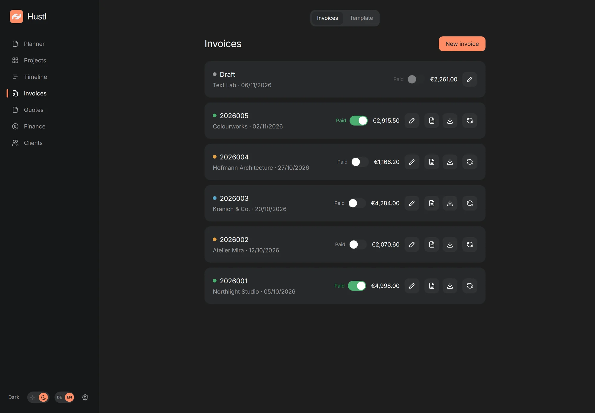
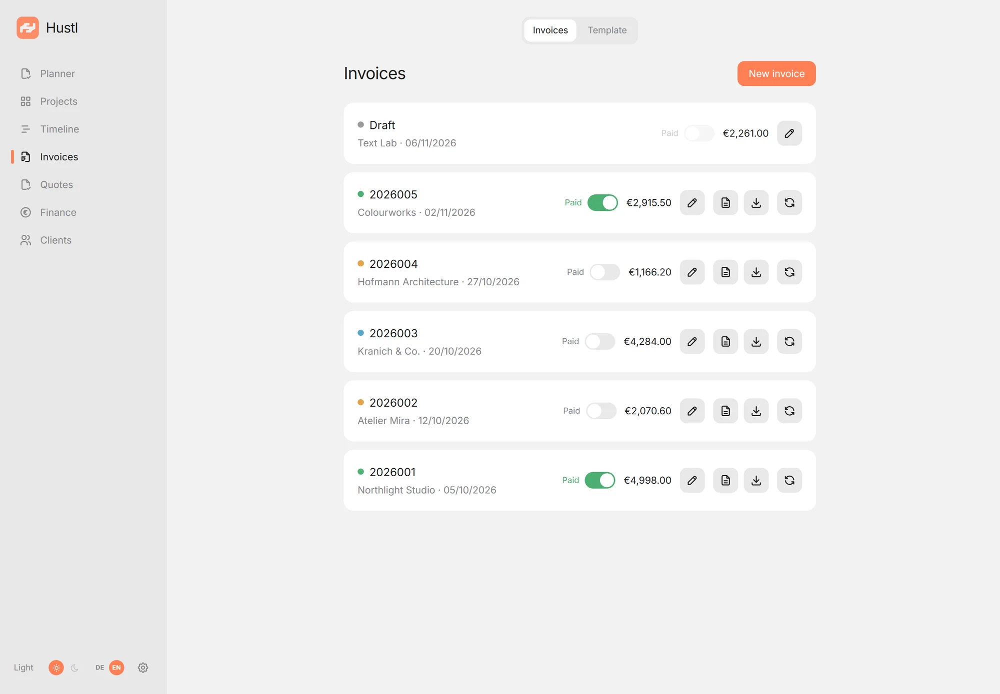
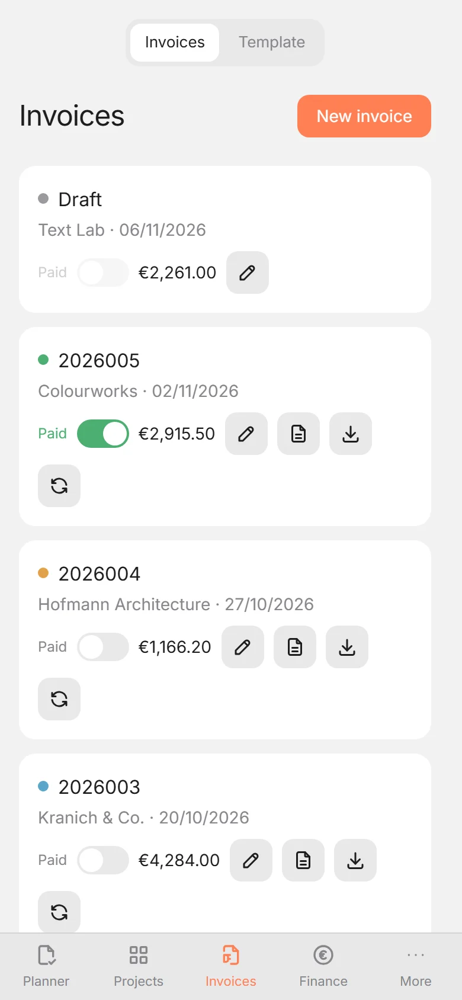
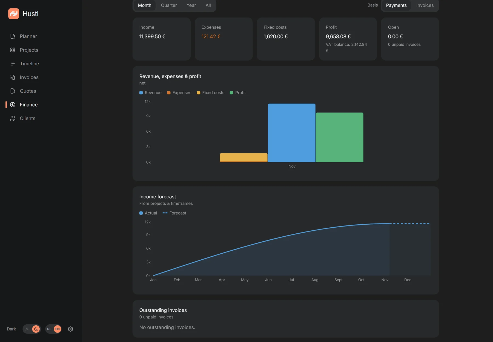
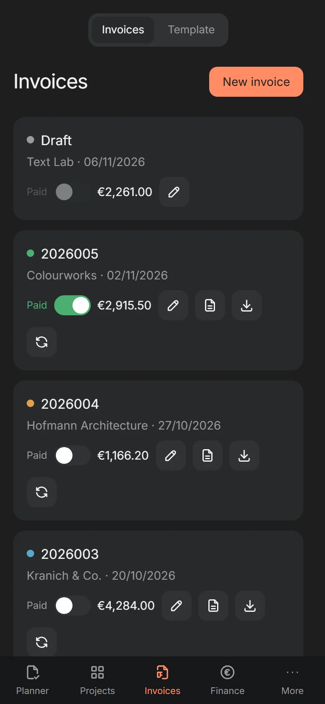
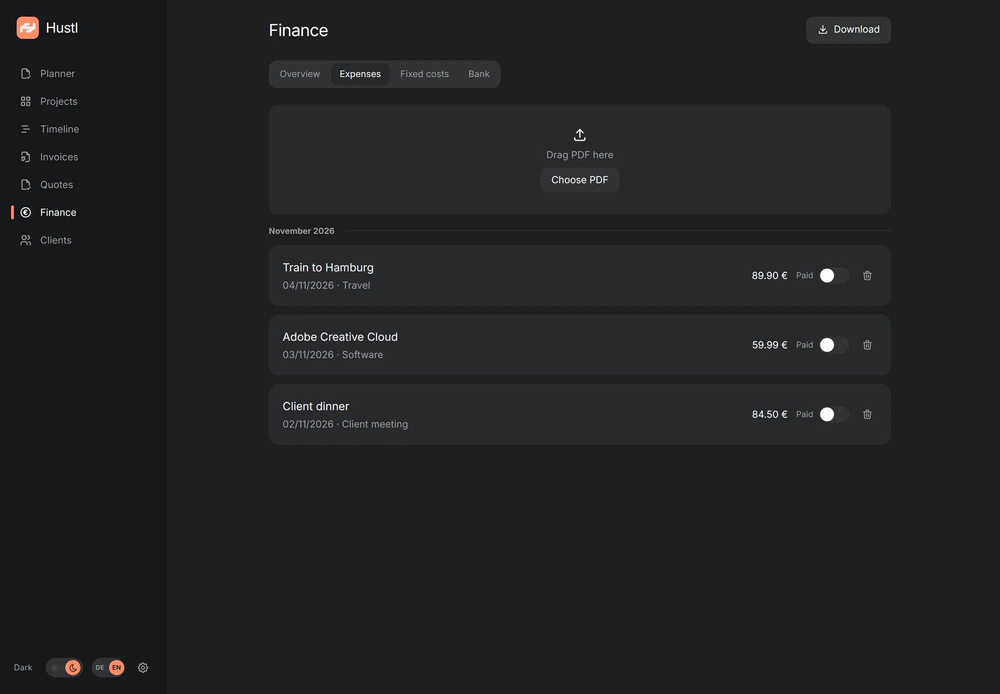
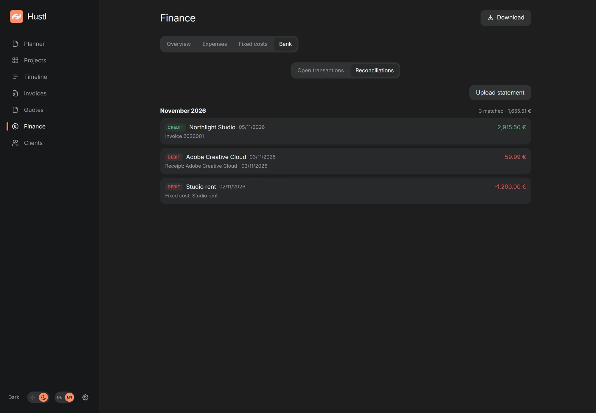
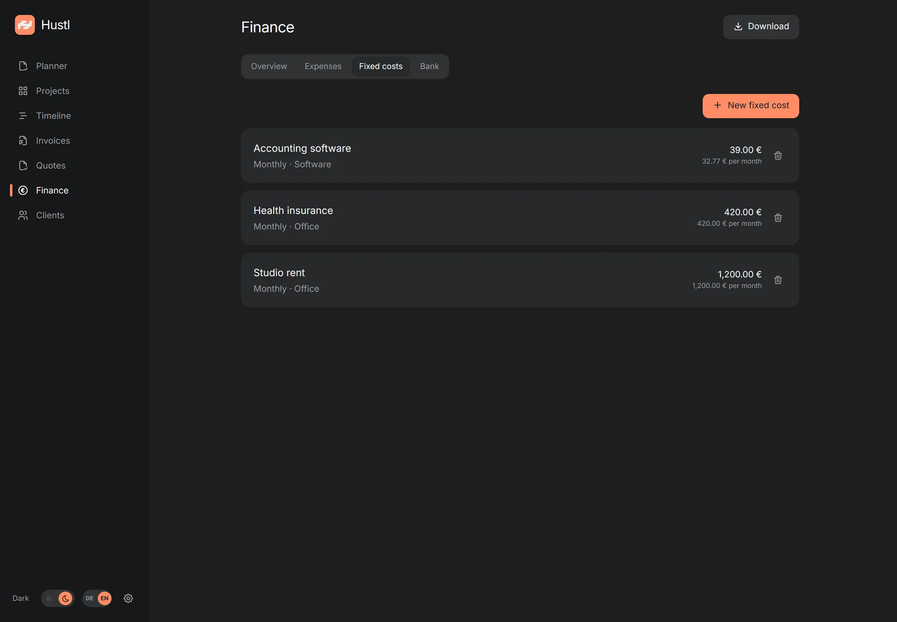

Invoices
Draft, number, PDF. With a sequential number range, cancellations and corrections, no spreadsheet on the side.
Self-hosted · Open source
Hustl brings invoices, offers, projects, tasks and finances into one calm app, on your own server. No cloud account, no telemetry, no monthly software subscription.

Everything in one place
No ten tools, no double bookkeeping. Hustl covers the path from the first idea to the monthly close, without software you don't need.
Draft, number, PDF. With a sequential number range, cancellations and corrections, no spreadsheet on the side.
ZUGFeRD / Factur-X as a hybrid PDF/A-3 according to EN 16931. For clients who expect digital invoices.
Versions, status and PDF. Turn an accepted offer into a client and project without typing it twice.
Hours, fixed prices and open items. Everything in the right place, with a clear view of the timeframe.
Income, expenses, fixed costs, forecast and monthly export. Your numbers without spreadsheet acrobatics.
PWA on iPhone, iPad and desktop. Plus desktop apps for Windows, macOS and Linux: one interface, all devices.
Who it's for
Hustl is for solo freelancers and one-person studios who would rather spend their time on the work than on five different tools.
One person per instance. Hustl is deliberately small: several passkeys, no roles or approvals. That keeps the app calm and your data in your hands.
Projects, tasks, invoices and finances sit next to each other. You see what is due, what is open and what is coming in, without piecing it together from spreadsheets.
Hustl belongs to you. There is no software subscription and no per-seat pricing. You only pay for your server and domain, usually 5 to 15 € per month for the server plus a few euros a year for the domain.
Invoices, receipts and client data live on your own server. No cloud account, no telemetry. You can back up, export and take the data with you.
Planner & tasks
Dated tasks, recurring routines and free lists live next to your projects and invoices. No second to-do app, no context switch.
See what is due at a glance. Move a task when plans change. The note and the context come with it.
Categories can reset daily, weekly or monthly. Bookkeeping, follow-ups and studio routines stay visible without being recreated.
Keep undated ideas in free lists, add a note to any task and see how consistently your routines are running.
Appearance
Hustl comes with a light and a dark theme. Follow your system or choose one for the workspace: same calm layout, same data, no reload.
The switch sits in the sidebar. On a phone it is under “More”. The choice stays on that device.


A closer look
No dashboards that overwhelm you. Just what you need for invoices, projects and finances.
Create invoices from projects, finalize them with one click and keep an eye on open items. Numbers are assigned sequentially, PDFs are generated automatically.
The dashboard shows income, expenses and profit, on a cash or invoice basis. Fixed costs and receipts are already included, and the forecast thinks ahead.

Open Hustl in your browser and install it as a PWA. On iPhone with Face ID, on desktop with Windows Hello. No app store, no extra account.

All screenshots show fictional demo data. Names, amounts and addresses are invented. The app UI is available in German and English.
Finance, step by step
Four steps, no spreadsheet. Open a step for the details that matter.
Upload a PDF; vendor, date, amount, currency and VAT are pre-filled for review.

Hustl reads the PDF text layer. Scanned images without text need manual fields; the PDF stays attached to the expense.
Upload a statement. Hustl lists transactions and suggests the invoice, expense or fixed cost.

Currently N26 PDF statements only.
A debit can be linked to an expense or fixed cost, or turned into a new expense with a receipt PDF. A credit can mark an invoice paid. Matching links records instead of duplicating them.
Add rent, insurance or software once. Choose monthly, quarterly or yearly, with start and end.

Active fixed costs are match targets for debit transactions. When one matches, the transaction is linked to the fixed cost instead of creating a second expense.
The solid line is realized revenue by invoice date. The dashed line adds open project pipeline.
Open projects are added at their end date, net of amounts already invoiced. Overdue projects land today; projects without a timeframe are shown separately. This is an income forecast, not profit; expenses and fixed costs are not included.
Installation
Hustl runs on your own server. The installer takes care of Docker, HTTPS (in bundled mode), autostart and a daily database snapshot.
A small VPS with 2 GB RAM and a domain pointing to it. Most providers set this up in a few minutes.
One command fetches Hustl, builds the container and sets up HTTPS (in bundled mode), the database snapshot and autostart. It asks for your domain and email.
Open the setup link, create your first passkey and store the recovery codes. After that, the server is yours.
The agent guide walks you and an AI assistant through the installation step by step, including VPS, SSH, domain, firewall and backups. Copy, paste, answer the questions. The guide is currently in German.
Open the agent guideNo server yet? The guide also explains what to look for when choosing a provider.
sudo mkdir -p /opt/hustl && sudo chown "$USER":"$USER" /opt/hustl
git clone https://github.com/bitm4ncer/hustl.git /opt/hustl/src
cd /opt/hustl/src && sudo ./deploy/selfhost/install.shHosting
Your own VPS is the easiest path. Hustl also runs on hardware you already have, as long as Docker and persistent storage are available.
Hetzner, Netcup, IONOS, Contabo or another provider. The installer sets up Docker, HTTPS (bundled) and the database snapshot.
from about €5 / monthA Linux server, Synology/QNAP with Docker or a home server. The installer targets Debian/Ubuntu; on a NAS, use compose.external.yml manually and set up the reverse proxy and backups yourself.
Docker on arm64, 4 GB RAM recommended. For external access use Cloudflare Tunnel or Tailscale Funnel; plan for stable power and backups.
one-time hardwareRailway, Render, Fly.io or a cluster: for experienced users, as long as the SQLite file lives on a persistent, block-backed volume. One replica, no NFS/SMB. Shared hosting and serverless without persistent disk won't work.
for experienced usersThe desktop app is not a server: it needs a reachable Hustl URL. A free cloud allowance (e.g. Oracle Cloud Free Tier, ARM) may be enough for testing. Availability and terms change.
Download
The desktop app is a slim shell around your Hustl instance. On first launch it asks for your server URL. Nothing else.
PWA instead of a download: Open your Hustl URL in the browser and choose “Install app” (Chrome/Edge) or “Add to Home Screen” (iOS). No installer, no updates. Just the website.
The desktop builds are unsigned. Windows and macOS ask for approval on first launch. Help in the README
All releases on GitHubFAQ
The most important answers before you rent a server.
The app is free and open source (ISC). You only pay for your server (roughly €5 to €15 per month depending on the provider) and a domain, usually €5 to €30 per year (€0.40 to €2.50 per month). The price depends on the TLD and registrar; first-year offers are often cheaper than renewals. No subscription, no license fee.
In a SQLite database and as PDFs on your own server. There is no cloud, no account with us and no analytics. Backups only leave the server if you set up an offsite target such as restic.
Yes. Hustl is deliberately self-hosted and not a hosted service. A small VPS is enough. The installer sets up Docker, HTTPS (in bundled mode) and a daily database snapshot. If that sounds too technical, use the agent guide.
Hustl is designed for one person per instance. You can use multiple passkeys and devices, but there are no roles, teams or separate user accounts.
Yes, if Docker and persistent storage are available, for example on a Synology/QNAP NAS, a home server or a Raspberry Pi. For external access you need a reverse proxy or a tunnel such as Cloudflare Tunnel. See the hosting options above.
Yes, as a PWA. Open your Hustl URL in Safari, tap “Share” and choose “Add to Home Screen”. Sign-in uses Face ID or Touch ID.
A passwordless login using Face ID, Touch ID, Windows Hello or a security key. You can add more devices later with a recovery code. Store the ten recovery codes separately from your phone or laptop.
Hustl uses passkeys, HttpOnly session cookies and CSRF protection. HTTPS is handled by your reverse proxy (Caddy in bundled mode). Updates and backups are your responsibility. The installer creates a daily database snapshot; PDFs and receipts are only included with restic or the full archive.
Yes. Download a full archive as a ZIP with the database, all PDFs and CSV files. For your tax adviser there is also a monthly export.
No. Hustl is deliberately self-hosted so your invoices and customer data stay with you. You can run it on a server you trust or at a hosting provider of your choice.
Hustl creates hybrid PDF/A-3 files according to EN 16931 (ZUGFeRD / Factur-X). It checks the data model, not full XSD/Schematron conformance. Before the first real send, validate a sample with the official KoSIT validator.
Ready?
No cloud, no subscription, no data with a third party. Just you, your invoices and a server you own.